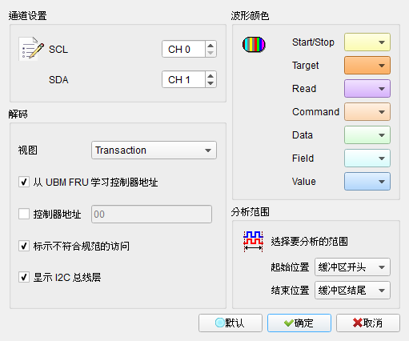
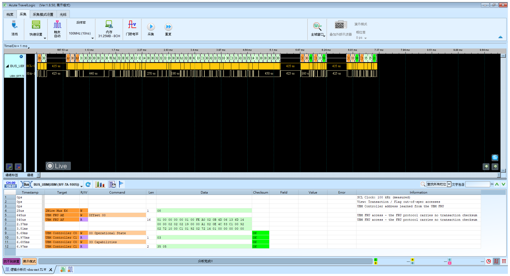
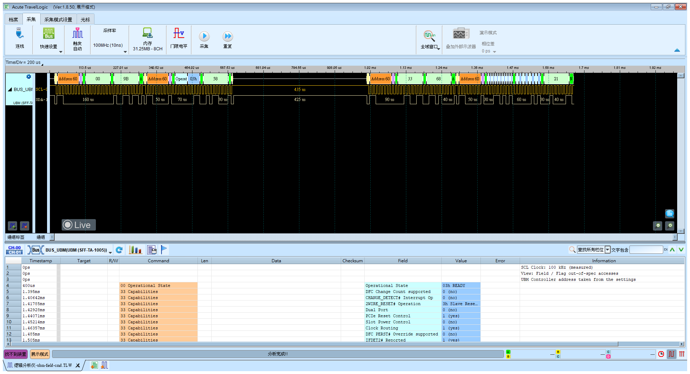
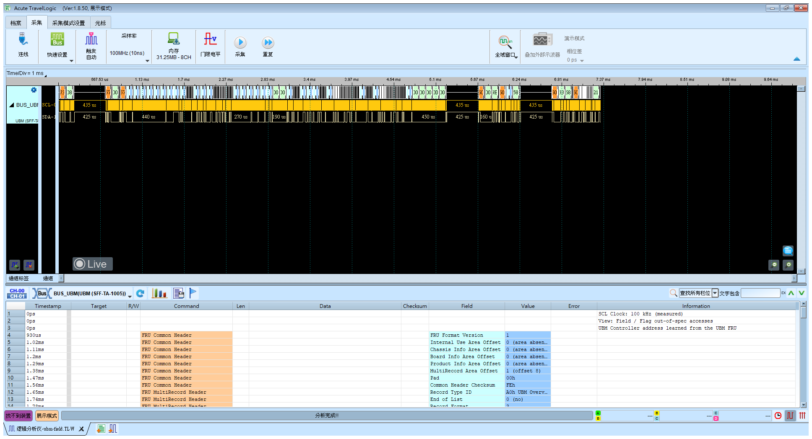

UBM (Universal Backplane Management, SFF-TA-1005)
UBM 是 SNIA 在 SFF-TA-1005 定义的存储背板管理接口。主机通过一条 两线制边带（SCL 与 SDA）向背板上的 UBM Controller 查询每一个 DFC（Drive Facing Connector）的状态：硬盘在不在、是 SAS 还是 PCIe、电源与 PERST# 怎么管、状态 LED 怎么亮。
这条边带上会同时出现三种设备，而只有第一种的地址是规范固定的：
| 设备 | 地址 | 出处 |
|---|---|---|
| UBM FRU（存放背板描述的 EEPROM） | 写 AEh、读 AFh |
§3 |
| 2Wire Mux | E0h–EFh |
§4.5 |
| UBM Controller | 不固定 —— 由背板厂自行决定，并记录在 FRU 里 | §5.3.2.2.1 |
规范另外定义了两种帧格式，而且它们是两个协议，不是同一个协议的变体。§5.1 的 FRU 访问是 普通的 EEPROM 事务，没有事务校验和；§6.1 的 Controller 命令则在写入时带一个命令校验和、 在回复时带一个读取校验和。
解码设置

| 设置 | 作用 | 默认 |
|---|---|---|
| SCL、SDA | §4.1 Table 4-1 的两条边带信号，两条都是必需的。UBM 没有相位选项，因为 2Wire 没有 CPOL/CPHA 的概念。 | CH 0、CH 1 |
| 视图 | 这个标签要显示哪一层。Transaction 是一行一笔 UBM 事务；Field 是一行一个具名字段。它选的是显示哪一层，不是解码哪一层 —— 想同时看两层，就加入两次解码、各选一个视图。 | Transaction |
| 从 UBM FRU 学习控制器地址 | 读取捕获文件里的 FRU 内容，沿 IPMI 的记录链找到 Overview Area，从中取出 UBM Controller 的地址。报表表头会说明这次用的是哪一个来源。 | 勾选 |
| 控制器地址 | 当捕获文件里没有 FRU 读取时，指定要视为 UBM Controller 的 8 位地址。勾选后才能输入，而且会覆盖学习到的值。 | 未勾选 |
| 标示超出规格的访问 | 当实测的 SCL 速率高于 400 kHz 时，在报表表头多加一行。400 kHz 是 Appendix C 第 1 条里 UBM Controller 的速率，而那一条是 informative：SFF-TA-1005 从头到尾没有规定总线速率，所以跑得更快只是超出 UBM 设计时假设的范围，并不是违反要求。因此它永远是一则说明、不是错误，那条总线上的流量也可能完全正常。 | 勾选 |
| 显示 I2C 总线层 | 在波形区把底层的传输也画出来 —— START、Repeated START、acknowledge、STOP —— 与 UBM 的方块并存。 | 勾选 |
| 波形颜色 | Start/Stop、Target、Read、Command、Data、Field、Value 各一个色块。校验和的判定不在这里：它固定是通过绿、失败红，这样判定就不可能被设置成看不见。 | 按协议 |
| 分析范围 | 要解码缓冲区的哪一段。 | 缓冲区开头 → 缓冲区结尾 |
解码结果

每一份报表都是先讲量到了什么，再讲是怎么读的：
| 行 | 示例 | 这一行在讲什么 |
|---|---|---|
| 1 | SCL Clock: 101.8 kHz (measured) |
从捕获文件自己的边沿量出来的时钟频率 —— 不是任何设置里的数字。“总线实际速率和预期不同”是解码看起来不对时最常见的原因，而这一行就是它现形的地方。not detected - no complete byte 表示这份捕获文件里没有一个被 acknowledge 的字节可以量。 |
| 2 | View: Transaction / Flag out-of-spec accesses |
下面那些行是用哪一个视图建出来的，以及有开着的非默认选项。同一份捕获文件用两个视图各出一份报表，少了这一行在纸上就分不出来。 |
| 接着 | UBM Controller address learned from the UBM FRU |
UBM Controller 的地址从哪里来 —— “UBM Controller C0”这句话，在“从 FRU 读到的”和“用户填进去的”两种情况下意义不同。 |
表头之后的行只在成立时才出现：FRU 表头校验和失败、Field 视图没有东西可显示，以及下面讲的 2Wire Mux 说明。
Transaction 视图一行一笔 UBM 事务，字段是 Target、R/W、Command、Len、 Data、Checksum、Error 与 Information。一次 Controller 读取在总线上是两个阶段 —— 先写入命令、Repeated START、再读出 —— 各自成为一行，因为两个阶段各有自己的地址与校验和。

Field 视图一行一个具名字段，字段是 Command、Field 与 Value。33h Capabilities
那两个字节会变成十一行：35h 05h 本身什么都没说，而
2WIRE_RESET# Operation = 3h Slave Reset + FRU + Controller + Mux 说出了这块背板能做什么。
这个视图的 Target 与 R/W 刻意留空 —— 它的主题是那些位代表什么意思，而地址在另一个
视图的每一行上都有。
DFC Status and Control Descriptor，以及里面那个 SES-4 元素
40h DFC Status and Control Descriptor 是操作者通常真正想看的那一笔：这个槽位插了什么、
机箱对它的说法是什么。它的前两个 byte 是 UBM 自己的字段（Drive Type Installed、
Bifurcate Port、PCIe Reset、DFC Change Count），而后四个 byte 是一个原封不动的
SES-4 Array Device Slot 元素。SFF-TA-1005 没有重写那些位的定义，而是指向 SES-4，
所以解码也照 SES-4（Table 74）读它们。
Field 视图把它们全部命名，而那正是「八个十六进制数字」与「一个答案」之间的差别：
| 字段 | 它告诉你什么 |
|---|---|
SES Element Status Code |
这个槽位的总体裁决，同时给代码与名称 —— 2h Critical 与 5h Not Installed 当成数字看很像，意思却完全不同 |
SES IDENT、SES FAULT REQSTD、SES FAULT SENSED |
机箱要求点亮哪一个指示灯、以及它自己认定的状态 —— 「LED 亮错颗」就是在这里看出来的 |
SES REBUILD/REMAP、SES IN CRIT ARRAY、SES IN FAILED ARRAY |
阵列认为这个槽位正在做什么 |
SES DO NOT REMOVE、SES APP CLIENT BYPASSED A/B、SES HOT SPARE |
一个看起来健康的槽位为什么没有被使用 |
没有这个视图，那四个 byte 就只是两栏十六进制；而 UBM 这条总线存在的目的之一 —— 承载 LED 与故障指示 —— 就完全无法从捕获文件里读出来。

同一个视图也会读 UBM FRU 自己的内容。FRU 访问没有命令字节，所以 Command 列显示的是这个
字段属于哪一个区块 —— FRU Common Header、FRU MultiRecord Header、UBM Overview Area
或 UBM Port Route Info Descriptor —— 而不是命令。
每个区块从哪里开始，是从 FRU 自己读出来的：Common Header 给出 MultiRecord 区的偏移， 每笔记录的长度给出下一笔从哪里开始。解码会跨捕获文件里所有的 FRU 读取去走这条链， 所以不论 host 是一次读完还是分批读，结果都一样 —— Appendix C 第 2 条建议分 8 × 32 byte 读， 所以一个 7 byte 的 route descriptor 常常是被切在两笔事务里的。
存的数字不等于它名字所指的那些字段会被展开，因为那正是这个视图的价值所在：
Link Width 0h 是1 条 lane、Maximum Power 0 是没有上限、区块偏移 1 是 byte 8、
DFC index FFh 表示这里没有接 DFC，而 UBM FRU Invalid = 0 表示 FRU 是有效的。
只有真的捕获到的字节才会被报告。 一份只含 FRU 前八个字节的捕获文件，只会得到 Common Header，再往后什么都没有 —— 因为再往后的每一个偏移与长度，都要从不在手上的字节 里读出来，所以不替它们假设任何值。
SFF-TA-1005 R1.3 标为 Reserved 的 Overview Area 字节不会被命名，即使至少有一家厂商的 实现在那里定义了字段。
SCL 与 SDA 接反的时候
两支探头接反的 2Wire 捕获文件会什么都解不出来：时钟的边沿跑到数据线上，所以一个字节都 框不出来。解码不会帮你对调回来 —— 它会讲出来，并且点名要改哪里：
SCL Clock: not detected - no complete byte
SCL and SDA may be swapped - SDA carries far more edges than SCL
No byte was decoded - exchange SCL and SDA in the Channel setting
到“解码设置”对话框的 通道设置 组里，把两个选择器对调即可。探头很可能插在对的引脚上， 只是对话框里两个通道指反了。
这个说明只会出现在“完全没有解出任何字节”的捕获文件上，而且还要数据线的边沿数超过 时钟线的两倍。正常总线上 SCL 每个 bit 翻两次、SDA 最多翻一次，所以有解出东西的捕获文件 不可能出现这个消息。完全没有信号的捕获文件也不会出现：用寥寥几个边沿算出来的比值毫无意义， 所以边沿数不到 64 个时，解码宁可不说话也不猜。
归属不到的 2Wire Mux 通道
§4.5 把 mux 的通道选择放在另外一笔、更早的事务里。当那一笔不在解码范围内 —— 范围被设成从 中间开始，或者录制本身就是从后面才开始 —— 第一笔 mux 写入之前的那段流量，属于更早选到的那个 通道，而那是无法从总线上得知的。报表会把这件事讲出来，而不是让人去猜：
2Wire Mux channel is unknown - the channel select is outside the window
它只在范围内有 mux 回应过自己的地址时才出现，因为那是“这条线上真的有 mux”唯一的证据。 对 mux 地址的写入如果没有人 acknowledge，那是 host 在探测 mux 而且没找到，不计入。第一笔 mux 写入之前的 FRU 访问也不会触发：§4.5 禁止把 UBM FRU 放在 2Wire Mux 后面，所以 FRU 的流量 从来没有疑义。
地址一律以 8 位呈现
SFF-TA-1005 全部以八位写地址、含 R/W# 位 —— FRU 是 AEh 与 AFh、mux 是 E0h–EFh ——
所以这个解码器也照着做，波形区的 Target 方块覆盖整个地址字节。同一份捕获文件用 I2C 解码会
显示 7 位的形式，所以同一个设备在那里是 57h、在这里是 AEh/AFh。那是同一个地址：
AEh = 57h << 1。
这也是为什么一笔事务会出现两个 Target。AEh/C0h 是写入阶段、AFh/C1h 是读取阶段，
是同一个设备，不是两个。
FRU 访问的 Checksum 列是空的
§5.1 写明 FRU 的内容是由内容结构自己的校验和保护的，所以 FRU 事务本身没有校验和。 那几行的 Checksum 列因此刻意留空，Information 列会说明原因。在那里套用 §6.1 的规则， 会让每一次 FRU 读取都被判成失败。
Error 与 Information
| 消息 | 含义 |
|---|---|
UBM Controller address learned from the UBM FRU |
地址是从这份捕获文件的 FRU 内容读出来的。 |
UBM Controller address taken from the settings |
地址来自控制器地址栏。 |
No UBM Controller address known - UBM layer not decoded |
两个来源都没有。Controller 的流量会被报成 Non-UBM。 |
UBM FRU access - the FRU protocol carries no transaction checksum |
见上，不是故障。 |
UBM FRU header checksum failed - the FRU content is unreliable and no controller address was taken from it |
IPMI 公共表头的总和不为零。解码器拒绝从信不过的内容学习地址。它不指明是哪一方的问题 —— 内容校验和不过，说不出是 EEPROM 存了坏数据、还是捕获把好数据读错了；在信号质量边缘的录制上，后者才是比较可能的那一个。 |
Capture ended before the transaction completed |
捕获窗口在事务中途结束。这是录制的性质，不是总线出错，所以它放在 Information 而不是 Error。 |
Command code is not defined in SFF-TA-1005 Rev 1.3 |
命令码不在 Table 6-6 里。 |
Checksum does not match |
§6.1 的命令或读取校验和失败。这一个才是 Error。 |
All bytes FFh - the controller reports an invalid command or checksum |
§6.1 Table 6-5：UBM Controller 检测到无效命令或无效命令校验和时，会把读取的每一个字节都填成 FFh —— 包含 Read Checksum。这一行和上面那个校验和 Error 同时出现，而两者说的是不同的事：Error 说“字节加起来不对”，这一行说“这个样式代表什么”。校验和在这里本来就该失败，host 就是靠它发现的。所以要去查的是 host 送了什么，不是信号质量。 |
说明事项
-
UBM Controller 的地址不是规范固定的。 §5.3.2.2.1 把它留给背板厂，并记录在 FRU 里。 如果捕获文件里没有 FRU 读取，请在设置里填入地址 —— 否则 Controller 的流量会被报成
Non-UBM，那是解码器在表示“我没有依据把它叫成别的”。 -
Data 列每行 16 个字节，所以整份 FRU 映像会呈现成数行 × 16，与 IPMI 的结构对齐。
-
Live mode 的解码结果与 offline 相同，但有四项明文限制。 live 期间报表与波形区都带 UBM 层，而且文字与停止捕获后逐组相同。live 做不到的是：
- 一笔事务只判定一次，不会回头重判。 它在自己的 STOP 到达时发布，而发布是最终的。
所以出现在“命名控制器的那笔 FRU 读取”之前的控制器流量会留在
Non-UBM， 而停止捕获后重读记录会把它改判成UBM Controller。报表表头每一场 live 都会讲这件事。 - 报表表头在任何流量到达之前就写出去，所以它陈述的是“当下已知的状态” —— 尤其是地址来源 —— 而不是整份捕获完成后才知道的事。
- 不量 SCL 速率，所以第一行是
not measured during a live session。 - 还在进行中的那一笔事务要等停止捕获才出现，因为它的校验和判定与字节角色 都还不可能知道。
- 一笔事务只判定一次，不会回头重判。 它在自己的 STOP 到达时发布，而发布是最终的。
所以出现在“命名控制器的那笔 FRU 读取”之前的控制器流量会留在
-
这条总线的捕获质量很重要。 背板边带上常有 SCL 的短毛刺，而落在时钟边缘的毛刺会改变 一个字节的起点。解码结果与总线应有的行为不符时，请开启软件毛刺过滤。